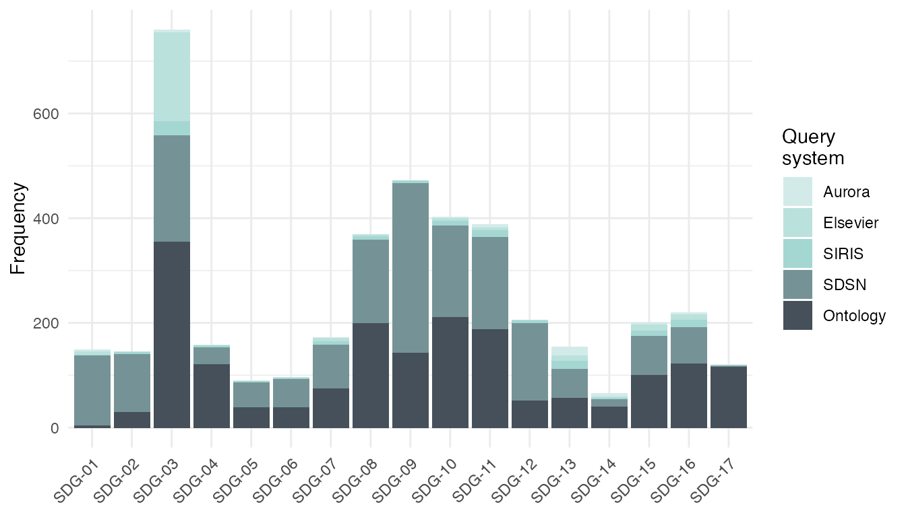

text2sdg: An open-source solution to monitoring sustainable development goals from text
Source:vignettes/text2sdg.Rmd
text2sdg.RmdIntroduction
The United Nations’ Sustainable Development Goals (SDGs) have become an important guideline for organizations to monitor and plan their contributions to social, economic, and environmental transformations. Existing approaches to identify efforts addressing each of the 17 goals rely on economic indicators or, in the case of academic output, on search engines of academic databases. text2sdg is the first open source, multi-system tool to detect SDGs in text.
The text2sdg package consists of four functions: detect_sdg(), detect_any(), plot_sdg(), and crosstab_sdg(). The function detect_sdg() carries out the detection of SDGs in text using up to five different established query systems. The function detect_any() enables search for custom search queries. Finally, the functions plot_sdg() and crosstab_sdg() help visualize and analyze the resulting SDG matches.
Detecting SDGs using detect_sdg()
The detect_sdg() identifies SDGs in texts that are provided via the text argument. Inputs to text must either be a character vector or an object of tCorpus from package corpustools. text is the only non-default argument of the function, which means that the function can be run with only the texts as input. The output of the function is a tibble with one row per match including the following columns (and types):
-
document(factor) - index of element in the character vector or corpus supply fortext -
sdg(character) - labels indicating the matched SDGs -
system(character) - the query system that produced the match -
query_id(integer) - identifier of query in the query system -
features(character) - words in the document that were matched by the query -
hit(numeric) - running index of matches for each query system
The example below runs the detect_sdg() for the projects data set included in the package prints the results. The data set is character vector containing 500 descriptions of randomly selected University of Basel research projects that were funded by the Swiss National Science Foundation (https://p3.snf.ch). The analysis produced a total of 462 matches using the three default query systems Aurora, Elsevier, and SIRIS.
# detecting SDGs in projects
hits_default <- detect_sdg(projects)
#>
#> Running aurora queries
#> Running siris queries
#> Running elsevier queries
hits_default
#> # A tibble: 462 × 6
#> document sdg system query_id features hit
#> * <fct> <chr> <chr> <int> <chr> <int>
#> 1 1 SDG-03 elsevi… 3 tuberculosis, human, tuberculosis, di… 1
#> 2 6 SDG-03 elsevi… 3 cancer 2
#> 3 8 SDG-03 elsevi… 3 vaccine 3
#> 4 14 SDG-03 elsevi… 3 cancer, cardiovascular, disease, obes… 4
#> 5 15 SDG-03 elsevi… 3 disease, human, human, human, disease… 5
#> 6 17 SDG-13 elsevi… 13 climate, prediction 6
#> 7 19 SDG-03 elsevi… 3 mental, health, mental, health, menta… 7
#> 8 19 SDG-03 siris 749 sleep, quality 1
#> 9 21 SDG-03 elsevi… 3 human, medicine, health, human 8
#> 10 22 SDG-03 elsevi… 3 cancer, cancer, cancer, cancer, cance… 9
#> # … with 452 more rowsSelecting query systems
By default sdg_detect() runs the three query systems, Aurora, Elsevier, and SIRIS. Using the function’s system argument the user can control which systems are run. There are two additional query systems that can be selected, Ontology and SDSN. In comparison, these two systems are much simpler and less restrictive than the former three as they only rely on logical ORs to combine keywords, which results much larger numbers of SDGs. Systematic validations are outstanding; however, it is likely that Ontology and SDSN therefore also produce a larger number of false positives, which is the reason they are not included in the function’s default query system set. More information about the systems can be gathered from the help files of the respective query data frames, aurora_queries, elsevier_queries, siris_queries, sdsn_queries, and ontology_queries.
The example below runs the detect_sdg() on the projects for each query system individually, including the two keyword-based systems. The resulting tibbles reveal that Aurora is most conservative (60 hits), followed by SIRIS (167), Elsevier (235), and then by large margin the two keyword-based systems SDSN (2,575) and Ontology (3,617). Note that the high numbers for the two keyword-based systems imply that, on average, 5 and 7 SDGs, respectively, are identified per document.
# detecting SDGs using all available query systems
hits_all <- detect_sdg(projects,
system = c("aurora", "elsevier", "siris", "sdsn", "ontology"))
#>
#> Running aurora queries
#> Running siris queries
#> Running elsevier queries
#> Running ontology queries
#> Running sdsn queries
# count hits of systems
table(hits_all$system)
#>
#> aurora elsevier ontology sdsn siris
#> 60 235 3617 2575 167Selecting SDGs
By default the detect_sdg() function aims to detect all SDGs covered by the different systems, which is 17 for Aurora, Ontology, and SDSN, and 16 for Elsevier and Siris. The latter two do not include queries for goal 17 - Global Partnerships for the Goals. If the user is only interested in a subset of SDGs or wants to reduce runtime, the sdgs argument can be used to run subsets of SDGs. The argument takes a numeric vector with integers in [1,17] indicating the SDGs that shall be detected.
The example below runs the detect_sdg() function only for SDGs 1, 2, 3, 4, and 5.
# detecting only for SDGs 1 to 5
hits_sdg_subset <- detect_sdg(projects, sdgs = 1:5)
#>
#> Running aurora queries
#> Running siris queries
#> Running elsevier queries
hits_sdg_subset
#> # A tibble: 241 × 6
#> document sdg system query_id features hit
#> * <fct> <chr> <chr> <int> <chr> <int>
#> 1 1 SDG-03 elsevi… 3 tuberculosis, human, tuberculosis, di… 1
#> 2 6 SDG-03 elsevi… 3 cancer 2
#> 3 8 SDG-03 elsevi… 3 vaccine 3
#> 4 14 SDG-03 elsevi… 3 cancer, cardiovascular, disease, obes… 4
#> 5 15 SDG-03 elsevi… 3 disease, human, human, human, disease… 5
#> 6 19 SDG-03 elsevi… 3 mental, health, mental, health, menta… 6
#> 7 19 SDG-03 siris 749 sleep, quality 1
#> 8 21 SDG-03 elsevi… 3 human, medicine, health, human 7
#> 9 22 SDG-03 elsevi… 3 cancer, cancer, cancer, cancer, cance… 8
#> 10 23 SDG-03 elsevi… 3 cancers, cancer, diseases, Human 9
#> # … with 231 more rowsControlling the output
By default the output of the detect_sdg() function returns matches at the level of query. This means one SDG can be matched multiple times in one document, which is possible because there are multiple queries belonging to the same SDGs produced in all systems except for Elsevier. On this level, it is meaningful to study the features (individual words) that were matched by the individual queries, which is why we refer to this output type as "features". If the user is only interested in matches at the level of documents, a reduced output can be selected by setting the output argument to "documents". As a result, the detect_sdg() returns a tibble that includes only distinct matches of document, system, and sdg combinations and drops the columns query_id and features.
The example below shows the alternative output resulting from setting output = "documents".
# return documents output format
detect_sdg(projects, output = "documents")
#>
#> Running aurora queries
#> Running siris queries
#> Running elsevier queries
#> # A tibble: 418 × 4
#> document sdg system hits
#> <fct> <chr> <chr> <int>
#> 1 1 SDG-03 elsevier 1
#> 2 6 SDG-03 elsevier 1
#> 3 8 SDG-03 elsevier 1
#> 4 14 SDG-03 elsevier 1
#> 5 15 SDG-03 elsevier 1
#> 6 17 SDG-13 elsevier 1
#> 7 19 SDG-03 elsevier 1
#> 8 19 SDG-03 siris 1
#> 9 21 SDG-03 elsevier 1
#> 10 22 SDG-03 elsevier 1
#> # … with 408 more rowsKeeping track of progress
By default the detect_sdg() function prints messages whenever it begins running a query system. This can help track the progress of the function, which for a large number of texts can take several minutes. To suppress these messages, the user can set the verbose argument to FALSE.
Custom search with detect_any()
The text2sdg provides with detect_any() a function that permits specification of custom query systems. The function operates similarly to detect_sdg(), but it requires an additional argument queries that specifies the queries to be employed. The queries argument expects a tibble with the following columns:
-
system(character) - names used to label query systems. -
queries(character) - queries used in search. -
sdg(integer) - mapping of queries to SDGs.
The queries in the custom query set can be Lucene-style queries following the syntax of the corpustools package. See vignette("corpustools"). This is illustrated in the example below. First, a tibble of three queries is defined that includes a single system and three queries that are mapped onto two sdgs, 3 and 7. The first query represents a simple keyword search, whereas queries 2 and 3 are proper search queries using logical operators.
# definition of query set
my_queries <- tibble::tibble(system = "my_system",
query = c("theory", "analysis OR analyses OR analyzed", "study AND hypothesis"),
sdg = c(3,7,7))
# return documents output format
detect_any(text = projects,
queries = my_queries)
#> # A tibble: 280 × 6
#> document sdg system query_id features hit
#> <fct> <chr> <chr> <dbl> <chr> <int>
#> 1 2 SDG-07 my_system 2 analysis 62
#> 2 4 SDG-07 my_system 2 analysis 189
#> 3 8 SDG-07 my_system 2 analyses, analysis 267
#> 4 9 SDG-07 my_system 2 analysis 274
#> 5 10 SDG-07 my_system 2 analysis, analyses 1
#> 6 11 SDG-07 my_system 2 analysis 6
#> 7 13 SDG-07 my_system 3 hypothesis, study 19
#> 8 15 SDG-07 my_system 2 analysis 28
#> 9 15 SDG-07 my_system 3 study, hypothesis 29
#> 10 16 SDG-07 my_system 2 analyzed 39
#> # … with 270 more rows
Visualizing hits with plot_sdg()
To visualize the hits produced by detect_sdg, the text2sdg package provides the function plot_sdg(). The function produces barplots illustrating either the hit frequencies produced by the different query systems. It is built on the ggplot2 package, which provides high levels of flexibility for adapting and extending its visualizations.
By default plot_sdg() produces a stacked barplot of absolute hit frequencies. Frequencies are determined on the document level for each system and SDGs present in the tibble that was provided to the function’s hits argument. If multiple hits per document, system and SDG combination exist, the function returns a message of how many duplicate hits have been suppressed.
The example below produces the default visualization for the hits of all five systems. Since the object was created with "output = features", the function informs that a total of 2490 duplicate hits were removed.
# show stacked barplot of hits
plot_sdg(hits_all)
#> 2490 duplicate hits removed. Set remove_duplicates = FALSE to retain duplicates.
Adjusting visualizations
The plot_sdg() has several arguments that permit adjustment of the visualization. The systems and sdgs arguments can be used to visualize subsets of systems and/or SDGs. The normalize argument can be used to normalize the absolute frequency by the number of documents (normalize = "documents") or by the total number of hits within a system (normalize = "systems"). The color argument can be used to adapt the color set used for the systems. The sdg_titles argument can be used to add the full titles of the SDGs. The remove duplicates argument can be used to retain any duplicate hits of document, system, and SDG combinations. Finally, the ... arguments can be used to pass on additional arguments to the geom_bar() function that underlies plot_sdg().
The example below uses some of the available arguments to make adjustments to the default visualization. With normalize = "systems" and position = "dodge", an argument passed to geom_bar(), it shows the proportion of SDG hits per system with bars presented side-by-side rather than stacked. Furthermore, due to sdg_titles = TRUE the full titles are shown rather than SDG numbers.
# show normalized, side-by-side barplot of hits
plot_sdg(hits_all,
sdg_titles = TRUE,
normalize = "systems",
position = "dodge")
#> 2490 duplicate hits removed. Set remove_duplicates = FALSE to retain duplicates.
Extending visualizations with ggplot2
Because plot_sdg() is implemented using ggplot2, visualizations can easily be extended using functions from the ggplot2 universe. The example below illustrates this. Using the facet_wrap function separate panels are created, one for each system, that show the absolute frequencies of hits per SDG.
# show system hits in separate panels
plot_sdg(hits_all) +
ggplot2::facet_wrap(~system, ncol= 1, scales = "free_y")
#> 2490 duplicate hits removed. Set remove_duplicates = FALSE to retain duplicates.
Analyzing hits using crosstab_sdg()
To assist the user in understanding the relationships among SDGs and query systems, the text2sdg package provides the crosstab_sdg() function. The function takes as input the tibble of hits produced by detect_sdg() and compares hits between either systems or SDGs. Comparing hits by system means that correlations are determined across all documents and all SDGs for every pair of systems to produce a fully crossed table of system correlations. Conversely, comparing hits by SDG means that correlations are determined across all documents and all systems for every pair of SDGs to produce a fully crossed table of SDG correlations.
Correspondence between query systems
By default the crosstab_sdg() function compares systems, which is illustrated below for the hits for all five systems. Note that the crosstab_sdg() function only considers distinct combinations of documents, systems, and SDGs implying that the output type of detect_sdg() does not matter; it will automatically treat the hits as if they had been produced using output = documents.
The analysis reveals two noteworthy results. First, correlations between systems are overall rather small. Second, query systems are more similar to systems of the same type, i.e., query or keyword-based.
# evaluate correspondence between systems
crosstab_sdg(hits_all) %>% round(2)
#> Aurora Elsevier SIRIS SDSN Ontology
#> Aurora 1.00 0.24 0.31 0.12 0.14
#> Elsevier 0.24 1.00 0.27 0.23 0.29
#> SIRIS 0.31 0.27 1.00 0.19 0.19
#> SDSN 0.12 0.23 0.19 1.00 0.35
#> Ontology 0.14 0.29 0.19 0.35 1.00When crosstab_sdg() evaluates the correspondence between query systems it does not distinguish between hits of different SDGs. Correlations for individual SDGs could be different from the overall correlations, and it is likely that they are higher, on average. To determine the correspondence between query systems for individual SDGs, the user can use the sdgs argument. For instance, sdgs = 1 will only result in a comparison of systems using only hits of SDG 1.
Correspondence between SDGs
The crosstab_sdg() can also be used to analyze, in a similar fashion, the correspondence between SDGs. To do this, the compare argument must be set to "sdgs". Again, correlations are calculated for distinct hits, while ignoring, in this case, the systems from which the hits originated.
The example below analyzes the correspondence of all SDGs across all systems. The resulting cross table reveals strong correspondences between certain pairs of SDGs, such as, for instance, between SDG-01 and SDG-02 or between SDG-07 and SDG-13.
# evaluate correspondence between systems
crosstab_sdg(hits_all, compare = "sdgs") %>% round(2)
#> SDG-01 SDG-02 SDG-03 SDG-04 SDG-05 SDG-06 SDG-07 SDG-08 SDG-09 SDG-10
#> SDG-01 1.00 0.47 0.05 0.06 0.12 0.17 0.08 0.16 0.32 0.18
#> SDG-02 0.47 1.00 0.09 0.07 0.06 0.17 0.13 0.16 0.29 0.15
#> SDG-03 0.05 0.09 1.00 0.22 0.17 0.04 0.02 0.22 0.17 0.35
#> SDG-04 0.06 0.07 0.22 1.00 0.14 0.08 0.09 0.18 0.15 0.27
#> SDG-05 0.12 0.06 0.17 0.14 1.00 0.11 0.05 0.10 0.14 0.20
#> SDG-06 0.17 0.17 0.04 0.08 0.11 1.00 0.19 0.16 0.18 0.11
#> SDG-07 0.08 0.13 0.02 0.09 0.05 0.19 1.00 0.13 0.29 0.10
#> SDG-08 0.16 0.16 0.22 0.18 0.10 0.16 0.13 1.00 0.35 0.33
#> SDG-09 0.32 0.29 0.17 0.15 0.14 0.18 0.29 0.35 1.00 0.31
#> SDG-10 0.18 0.15 0.35 0.27 0.20 0.11 0.10 0.33 0.31 1.00
#> SDG-11 0.20 0.22 0.22 0.20 0.16 0.32 0.22 0.27 0.31 0.28
#> SDG-12 0.24 0.28 0.10 0.05 0.07 0.30 0.28 0.13 0.31 0.14
#> SDG-13 0.05 0.08 -0.03 0.04 0.01 0.21 0.40 0.07 0.15 0.04
#> SDG-14 0.05 0.09 0.03 0.02 0.02 0.15 0.15 0.09 0.09 0.09
#> SDG-15 0.08 0.18 0.14 0.05 0.03 0.22 0.14 0.18 0.21 0.14
#> SDG-16 0.14 0.11 0.17 0.26 0.33 0.13 0.04 0.23 0.17 0.24
#> SDG-17 -0.02 0.02 0.26 0.25 0.05 0.03 -0.01 0.14 0.03 0.21
#> SDG-11 SDG-12 SDG-13 SDG-14 SDG-15 SDG-16 SDG-17
#> SDG-01 0.20 0.24 0.05 0.05 0.08 0.14 -0.02
#> SDG-02 0.22 0.28 0.08 0.09 0.18 0.11 0.02
#> SDG-03 0.22 0.10 -0.03 0.03 0.14 0.17 0.26
#> SDG-04 0.20 0.05 0.04 0.02 0.05 0.26 0.25
#> SDG-05 0.16 0.07 0.01 0.02 0.03 0.33 0.05
#> SDG-06 0.32 0.30 0.21 0.15 0.22 0.13 0.03
#> SDG-07 0.22 0.28 0.40 0.15 0.14 0.04 -0.01
#> SDG-08 0.27 0.13 0.07 0.09 0.18 0.23 0.14
#> SDG-09 0.31 0.31 0.15 0.09 0.21 0.17 0.03
#> SDG-10 0.28 0.14 0.04 0.09 0.14 0.24 0.21
#> SDG-11 1.00 0.31 0.17 0.12 0.19 0.26 0.18
#> SDG-12 0.31 1.00 0.13 0.10 0.19 0.08 0.07
#> SDG-13 0.17 0.13 1.00 0.29 0.27 0.01 0.00
#> SDG-14 0.12 0.10 0.29 1.00 0.23 -0.01 0.01
#> SDG-15 0.19 0.19 0.27 0.23 1.00 0.07 0.11
#> SDG-16 0.26 0.08 0.01 -0.01 0.07 1.00 0.18
#> SDG-17 0.18 0.07 0.00 0.01 0.11 0.18 1.00